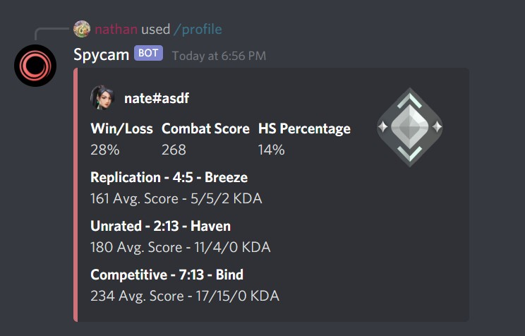

Spycam
Spycam is a brand-new VALORANT bot designed to track stats and keep your eyes on the leaderboard. Built with Discord's Slash Commands API, Spycam is the easiest and most straightforward way to track your stats on Discord.
Invite Spycam

Legal